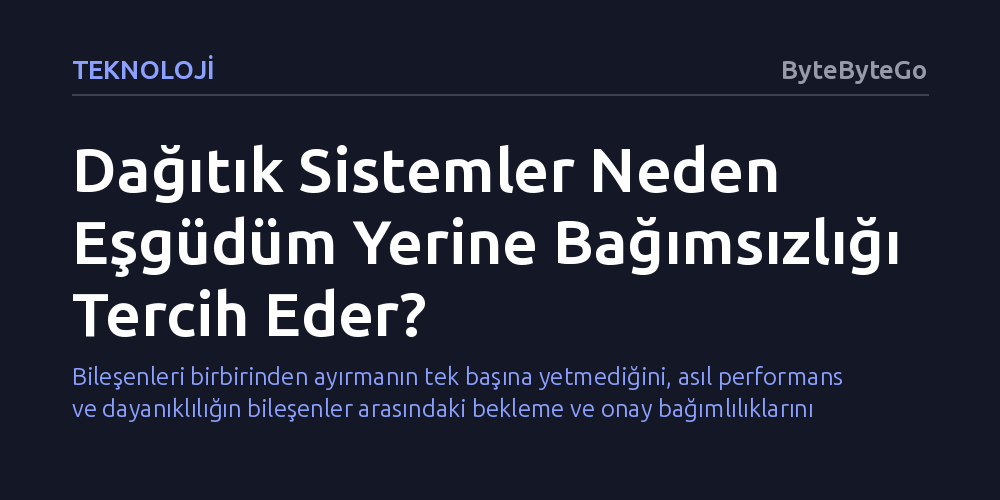

TEKNOLOJI · ByteByteGo · 2026-10-23
Dağıtık sistemlerde bileşenlerin birbirini beklemesi ve sürekli eşgüdüm kurması performansı düşürüp sistemi kırılganlaştırır. Modern mimariler, kilitlenmeleri ve gecikmeleri aşmak için parçaların eşgüdüme muhtaç olmadan bağımsız çalışabilmesini hedefler.
Bileşenleri birbirinden ayırmanın tek başına yetmediğini, asıl performans ve dayanıklılığın bileşenler arasındaki bekleme ve onay bağımlılıklarını ortadan kaldırmakla sağlandığını gösterir.

Geleneksel tek parça (monolitik) yazılımlarda tüm işlevler aynı bellek havuzunda ve tek bir işletim sistemi sürecinde gerçekleşirken, dağıtık sistemlerde iş bölümü esastır. Bu mimarilerde uygulama servisleri, veri tabanı replikaları ve arka plan işçileri birbirinden bağımsız süreçlerde, hatta farklı fiziksel sunucularda çalışır. Sistemi bu şekilde çok sayıda küçük parçaya ayırmak esneklik ve ölçeklenebilirlik kazandırsa da beraberinde temel bir mimari gerçeklik getirir: Bileşenlerin tek başına tamamlayamadığı görevler için birbiriyle iletişim kurma zorunluluğu.
Bir bileşenin görevini bitirebilmek adına başka bir bileşene başvurması, dağıtık sistemlerin en sık rastlanan rutinidir. Ancak ağ üzerinden gerçekleşen bu temas yalnızca bir veri aktarımından ibaret değildir; genellikle bir bileşenin diğerinin yanıtını ya da onayını beklemesini gerektirir. Süreçlerin fiziksel olarak ayrışmasıyla birlikte ortaya çıkan bu bekleme hali, sistemin genel hızını ve sıhhatini tek tek parçaların kapasitesinden ziyade parçalar arasındaki etkileşimin kalitesine bağlar.
Sistem mimarisinde bileşenler arasındaki bu karşılıklı konuşma ve bekleme trafiğine "eşgüdüm" (koordinasyon) adı verilir. Eşgüdüm pratikte üç temel senaryoda kendini gösterir: Bir mikroservisin işleme devam etmeden önce başka bir servisten onay beklemesi, ana veri tabanının bir kaydı kalıcı kılmadan önce replikalarından doğrulama iletisi (acknowledgment) talep etmesi ya da arka plandaki bir işçinin paylaşımlı kaynağa erişebilmek için kilit sırasına girmesi.
Bu senaryoların ortak noktası, işlemlerin doğal akışını durduran bekleme süreleridir. Dağıtık ortamlarda ağ gecikmeleri tabiatı gereği öngörülemezdir; paketler gecikebilir, sunucular geçici olarak yavaşlayabilir veya kilit kuyrukları uzayabilir. Bir parçanın yanıtındaki ufak bir gecikme, ona bağımlı olan diğer tüm servislerin de beklemesine yol açarak bütün sistemi yavaşlatan ve kaynakları tüketen zincirleme bir darboğaza dönüşür.
Modern dağıtık sistem mühendislerinin eşgüdüm yerine bağımsızlığı (otonomluğu) öncelemesinin temelinde, bu gecikme ve kırılganlık döngüsünü kırma arzusu yatar. Bir bileşen işini yapabilmek için diğer bileşenlerin anlık yanıtına ne kadar az ihtiyaç duyarsa, sistem o denli yüksek verimle ve kesintisiz çalışır. Bağımsızlık, her parçanın kendi kararlarını yerel verisiyle alabilmesi ve harici bir teyide muhtaç olmadan işlem yapabilmesi anlamına gelir.
Sıkı eşgüdüm gerektiren sistemlerde en yavaş bileşen, tüm mimarinin tavan hızını belirler. Bağımsızlığı hedefleyen mimarilerde ise asenkron mesajlaşma, yerel veri kopyaları ve gevşek bağlı (loosely coupled) yapılar tercih edilir. Parçaların birbirini doğrudan ve eşzamanlı olarak beklemediği bu sistemler, donanım veya ağ arızalarında dahi kısmi işlevselliğini sürdürerek tek bir servisteki çöküşün tüm sistemi aşağı çekmesini engeller.
Eşgüdümü tamamen ortadan kaldırmak ideal bir hedef gibi görünse de pratikte bazı ödünleşimleri kabullenmeyi gerektirir. Bileşenler birbirine anlık olarak danışmadan bağımsız kararlar aldığında, sistemin farklı noktalarında aynı anda güncellenen verilerin tutarlılığını sağlamak zorlaşır. Anlık ve mutlak tutarlılık (strong consistency) yerine zamana yayılan nihai tutarlılık (eventual consistency) modellerini benimsemek, koordinasyonsuz mimarilerin en temel mühendislik bedelidir.
Dağıtık sistemler dünyasında ustalık, eşgüdümü körü körüne her adıma yaymaktan değil, onu yalnızca mutlak zorunluluk hallerinde devreye sokup geri kalan tüm süreçleri bağımsız kılmaktan geçer. Mimarlar hangi noktaların gerçekten merkezi bir el sıkışmaya ihtiyaç duyduğunu ve hangi noktaların otonom yürütülebileceğini doğru ayrıştırdığında hem yüksek erişilebilirlik hem de gerçek ölçeklenebilirlik elde edilir.